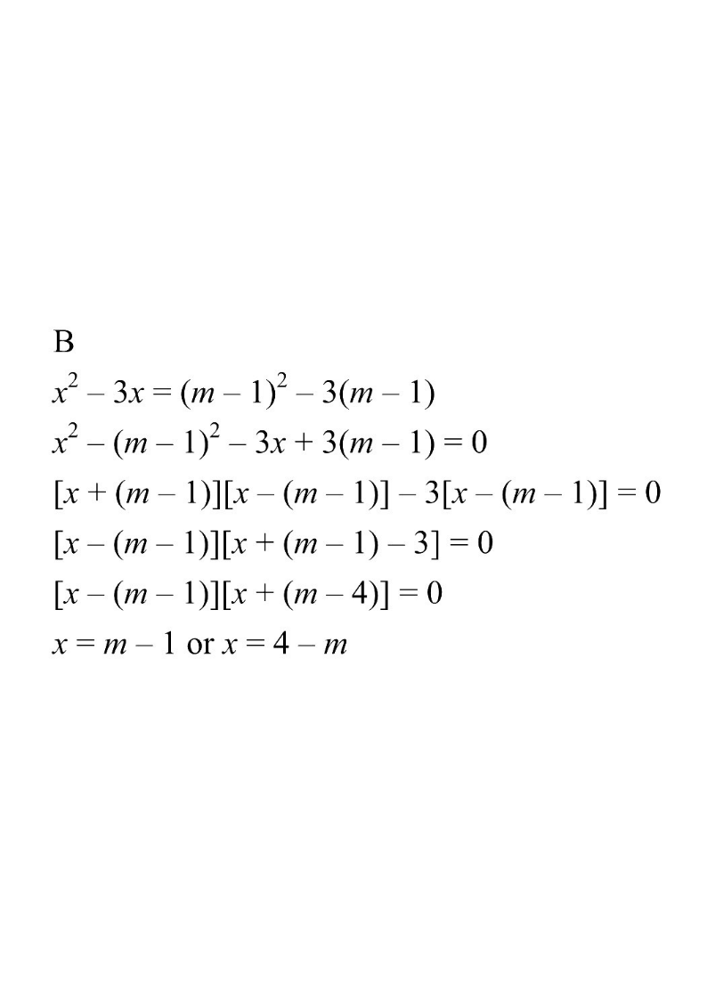

Step map: solve $x^2-3x=(m-1)^2-3(m-1)$.
Let $m$ be a constant. Solve the equation \[x^{2}-3x=(m-1)^{2}-3(m-1).\]

Given: $\;x^{2}-3x=(m-1)^{2}-3(m-1)$.
Notice the same pattern "$(\;\;)^{2}-3(\;\;)$" appears on both sides — one with $x$, one with $m-1$.
\[x^{2}-(m-1)^{2}-3x+3(m-1)=0\]
\[x^{2}-(m-1)^{2}-3\big[x-(m-1)\big]=0\]
Use $a^{2}-b^{2}=(a+b)(a-b)$ with $a=x,\;b=m-1$:
\[\big[x+(m-1)\big]\big[x-(m-1)\big]-3\big[x-(m-1)\big]=0\]
Take out the common factor $\big[x-(m-1)\big]$:
\[\big[x-(m-1)\big]\big[x+(m-1)-3\big]=0\]
\[(m-1)-3=m-4,\quad\text{so}\quad \big[x-(m-1)\big]\big[x+(m-4)\big]=0\]
\[x-(m-1)=0 \;\Rightarrow\; x=m-1\]
\[x+(m-4)=0 \;\Rightarrow\; x=-(m-4)=4-m\]
Roots: $x=m-1$ or $x=4-m$ → matches option B.